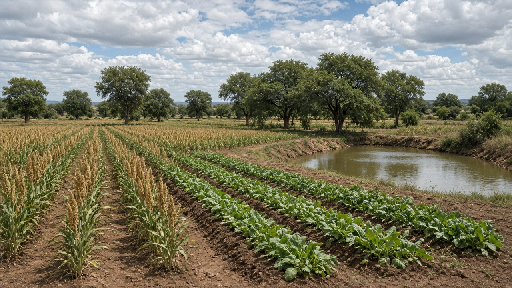
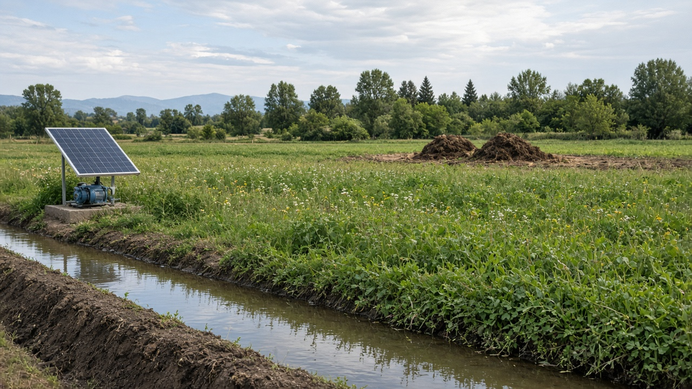
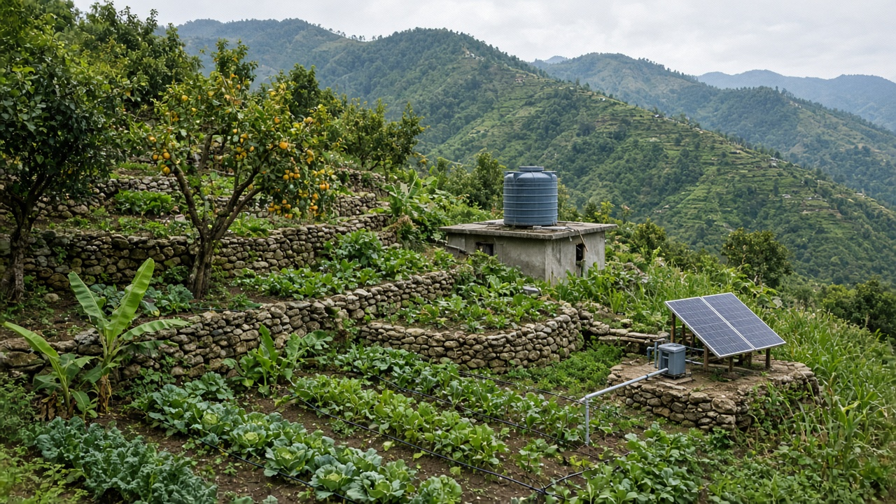

Climate-Smart Agriculture
Published on August 20, 2026

Climate-smart agriculture integrates practices that increase productivity, enhance resilience to climate shocks, and reduce greenhouse-gas emissions where possible. Farmers facing unpredictable rainfall, rising temperatures, and more frequent extreme weather events need strategies that protect crops and livestock while maintaining livelihoods. Drought-tolerant seed varieties, improved water harvesting, and agroforestry shade trees help buffer fields against heat stress and moisture loss. Early-warning systems and climate information services enable growers to adjust planting dates and select appropriate crops for shifting seasonal patterns.
Carbon-smart techniques such as reduced tillage, cover cropping, and efficient fertilizer use lower nitrous oxide and CO2 emissions from agricultural soils. Livestock producers adopt improved feeding regimes and manure management to cut methane releases from enteric fermentation and stored waste. Insurance products, index-based weather payouts, and disaster preparedness plans provide financial safety nets when harvests fail due to hail, floods, or prolonged dry spells. International climate finance and national adaptation funds support smallholders in adopting resilient infrastructure like solar pumps and elevated grain storage. These combined measures help farming communities prepare for climate uncertainty while maintaining productive landscapes.
Successful climate-smart programs combine scientific research with farmer-led innovation and local knowledge about microclimates and traditional coping methods. Policy coherence across agriculture, water, energy, and forestry sectors prevents conflicting incentives that undermine long-term sustainability. Consumers and retailers increasingly value supply chains that document reduced emissions and fair treatment of farming communities affected by climate change. By aligning food production with planetary boundaries, climate-smart agriculture contributes to global efforts to limit warming while ensuring that rural populations can thrive in a changing world. National adaptation plans that prioritize smallholder resilience remain essential for equitable climate action in agriculture.

जलवायु-स्मार्ट कृषिले उत्पादकता बढाउने, जलवायु आघातप्रति लचिलोपन बढाउने र सम्भव भएसम्म ग्रीनहाउस ग्यास उत्सर्जन घटाउने अभ्यास एकीकृत गर्छ। अनियमित वर्षा, बढ्दो तापक्रम र बढ्दो अत्यधिक मौसम सामना गर्ने किसानले बाली र पशु संरक्षण गर्दै जीविका कायम राख्ने रणनीति चाहिन्छ। खडेरी-सहन बीउ जात, सुधारिएको पानी सङ्कलन र कृषि वन छायाँ बिरुवाले ताप तनाव र नमी क्षति विरुद्ध खेत संरक्षण गर्छ। प्रारम्भिक चेतावनी प्रणाली र जलवायु सूचना सेवाले किसानलाई रोपाइँ मिति र उपयुक्त बाली छनोट समायोजन गर्न मद्दत गर्छ।
कार्बन-स्मार्ट तकनीक जस्तै जुतो घटाउने, कभर क्रप र प्रभावकारी मल प्रयोगले कृषि माटोबाट नाइट्रस ऑक्साइड र CO2 उत्सर्जन घटाउँछ। पशु उत्पादकले सुधारिएको खुवाउने र गोबर व्यवस्थापन अपनाएर आन्त्रिक किण्वन र भण्डारण फोहोरबाट मिथेन उत्सर्जन काट्छ। बीमा, सूचक-आधारित मौसम भुक्तानी र प्रकोप तयारी योजनाले असिना, बाढी वा लामो खडेरीमा बाली असफल हुँदा आर्थिक सुरक्षा दिन्छ। अन्तर्राष्ट्रिय जलवायु वित्त र राष्ट्रिय अनुकूलन कोषले साना किसानलाई सौर्य पम्प र उच्च भण्डारण जस्ता लचिलो पूर्वाधार अपनाउन समर्थन गर्छ।
सफल जलवायु-स्मार्ट कार्यक्रमले वैज्ञानिक अनुसन्धान र किसान-नेतृत्वको नवीनता तथा स्थानीय ज्ञान संयोजन गर्छ। कृषि, पानी, ऊर्जा र वन क्षेत्रको सुसंगत नीतिले दीर्घकालीन दिगोपनकारिता कमजोर पार्ने विरोधाभासी प्रोत्साहन रोक्छ। उपभोक्ता र खुद्रा व्यापारी उत्सर्जन घटेको र जलवायु परिवर्तनले प्रभावित कृषि समुदायको न्यायपूर्ण व्यवहार देखाउने आपूर्ति श्रृंखला मूल्यांकन गर्छ। खाद्य उत्पादन ग्रहीय सीमा सँग मेल खाएर, जलवायु-स्मार्ट कृषिले ताप वृद्धि सीमित गर्ने विश्वव्यापी प्रयासमा योगदान दिन्छ।

जलवायु-स्मार्ट कृषि उत्पादकता बढ़ाने, जलवायु आघात के प्रति लचीलापन बढ़ाने और संभव हो तो ग्रीनहाउस गैस उत्सर्जन घटाने वाले अभ्यास एकीकृत करती है। अनियमित वर्षा, बढ़ते तापमान और अधिक अत्यधिक मौसम का सामना करने वाले किसानों को फसल और पशु संरक्षित करते हुए आजीविका बनाए रखने की रणनीति चाहिए। सूखा-सहन बीज किस्म, सुधारित जल संग्रह और कृषि वन छाया पेड़ गर्मी तनाव और नमी हानि से खेत की रक्षा करते हैं। प्रारंभिक चेतावनी प्रणाली और जलवायु सूचना सेवाएँ किसानों को बोने की तिथि और उपयुक्त फसल चुनने में समायोजन करने में मदद करती हैं।
कार्बन-स्मार्ट तकनीक जैसे जुताई कम करना, कवर फसल और प्रभावी उर्वरक प्रयोग कृषि मिट्टी से नाइट्रस ऑक्साइड और CO2 उत्सर्जन घटाते हैं। पशु उत्पादक सुधारित खुराक और गोबर प्रबंधन अपनाकर आन्त्रिक किण्वन और भंडारित अपशिष्ट से मीथेन उत्सर्जन काटते हैं। बीमा, सूचक-आधारित मौसम भुगतान और आपदा तैयारी योजनाएँ ओलावृष्टि, बाढ़ या लंबे सूखे में फसल विफल होने पर वित्तीय सुरक्षा देती हैं। अंतर्राष्ट्रीय जलवायु वित्त और राष्ट्रीय अनुकूलन कोष छोटे किसानों को सौर्य पंप और उच्च भंडारण जैसे लचीले बुनियादी ढाँचे अपनाने में समर्थन करते हैं।
सफल जलवायु-स्मार्ट कार्यक्रम वैज्ञानिक अनुसंधान और किसान-नेतृत्व वाली नवाचार तथा स्थानीय ज्ञान का संयोजन करते हैं। कृषि, जल, ऊर्जा और वन क्षेत्र की सुसंगत नीति दीर्घकालिक स्थिरता को कमजोर करने वाले विरोधाभासी प्रोत्साहन रोकती है। उपभोक्ता और खुदरा विक्रेता उत्सर्जन घटाने और जलवायु परिवर्तन से प्रभावित कृषि समुदाय के न्यायपूर्ण व्यवहार को दर्शाने वाली आपूर्ति श्रृंखला को महत्व देते हैं। खाद्य उत्पादन को ग्रहीय सीमा के साथ मेल खिलाकर, जलवायु-स्मार्ट कृषि ताप वृद्धि सीमित करने के वैश्विक प्रयास में योगदान देती है।